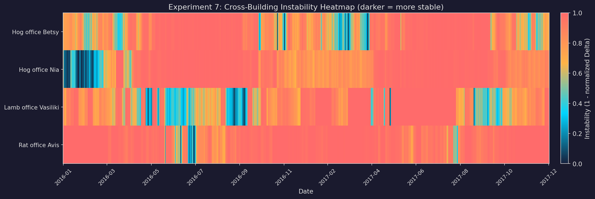
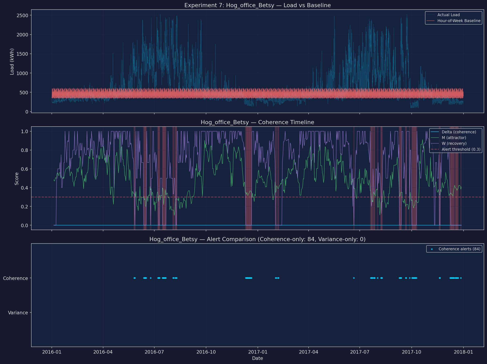
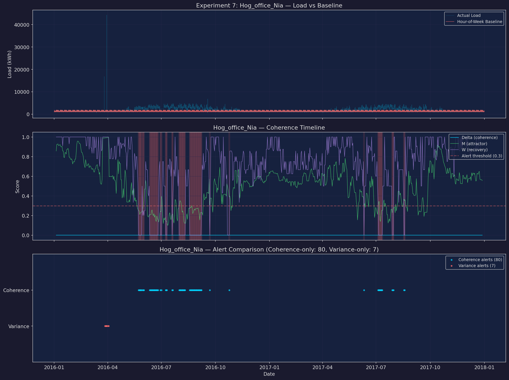
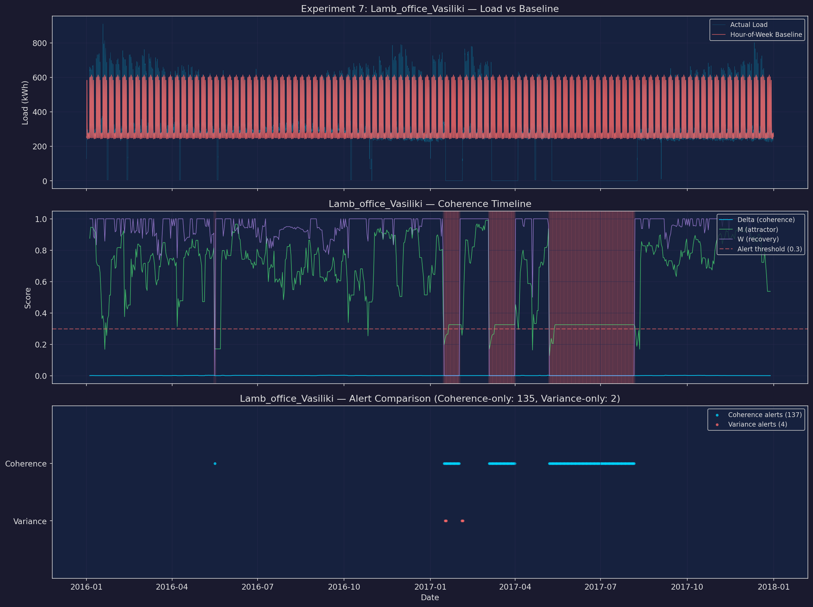
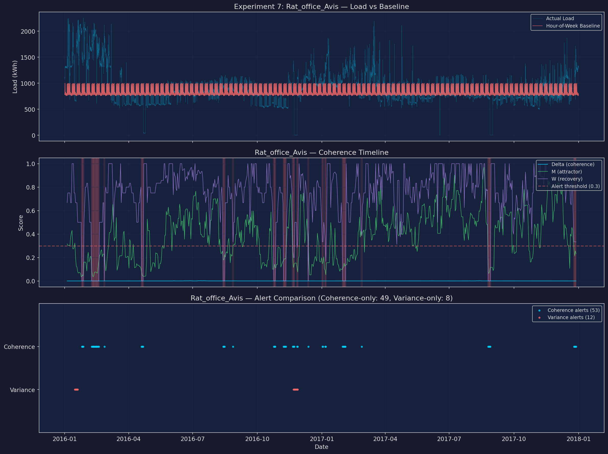

Key Results
0.06σ
Noise Threshold (Exp 1)
507
Δ Lead Time (steps)
-913
Var Lead Time (steps)
1.010
Cross-System CV (Exp 5)
100%
MC Detection Rate
406
MC Mean Lead (steps)
15.4s
Total Runtime
Synthetic Experiments (GPU)
Experiment 01
Coherence vs Noise Threshold
Does coherence collapse at a predictable threshold as noise increases?

Coherence drops sharply at σ ≈ 0.061, confirming threshold behavior.
Below this noise level, Δ maintains structural sensitivity. Above it, signal degrades into noise.
Threshold confirmed
Experiment 02
Recovery Dynamics After Shock
Does coherence capture recovery differences after perturbation?

| Recovery | Rate | Δ | M | W |
|---|---|---|---|---|
| Very Low | 0.005 | 0.5984 | 0.418 | 1.000 |
| Low | 0.02 | 2.4262 | 0.883 | 1.000 |
| Medium | 0.05 | 5.3277 | 0.988 | 1.000 |
| High | 0.1 | 8.4644 | 0.981 | 1.000 |
| Very High | 0.2 | 11.8286 | 0.859 | 1.000 |
Experiment 03
Hidden Drift Before Visible Failure
Can Δ detect drift significantly earlier than variance or z-score?

Δ Coherence
Detected at step 1060
Lead time: 507 steps
Variance
Detected at step 2480
Lead time: -913 steps
Δ detects the hidden drift 1420 steps earlier than variance.
Early Detection
Experiment 04
Shock Response vs Coherence
Lower coherence → larger deviation + slower recovery?

| Coherence | Peak Dev | Return Time | Δ | Post-Shock σ |
|---|---|---|---|---|
| 0.95 | 4.00 | 40 | 6.6999 | 0.0447 |
| 0.70 | 4.56 | 19 | 0.8456 | 0.2698 |
| 0.40 | 3.95 | 23 | 0.1220 | 0.5812 |
| 0.10 | 5.81 | 35 | 0.0333 | 0.8193 |
Experiment 05
Cross-System Generalization
Does Δ remain consistent across different signal types?

| Signal Type | Mean Δ |
|---|---|
| Sinusoidal | 3.9161 |
| Chaotic | 0.0000 |
| Piecewise | 9.2186 |
| Stochastic | 9.4914 |
Cross-system coefficient of variation: 1.010
Inconsistent
Experiment 06
Monte Carlo Lead-Time Analysis
Statistical robustness across 1000 randomized trials.

Δ Coherence
Detection rate: 100.0%
Mean lead: 406 steps
Median lead: 320 steps
Variance
Detection rate: 3.2%
Mean lead: 103 steps
Median lead: 103 steps
Real-World Validation
Experiment 07
Energy Systems — Office Building Electricity
Applying the coherence framework to real hourly electricity load data from four office buildings.
Hour-of-week baselines with rolling Δ scoring.
4
Buildings
354
Coherence Alerts
23
Variance Alerts
348
Coherence-Only
| Building | Mean Δ | M | W | Coh. | Var. | Coh-Only |
|---|---|---|---|---|---|---|
| Hog office Betsy | 0.0000 | 0.790 | 1.000 | 84 | 0 | 84 |
| Hog office Nia | 0.0000 | 0.841 | 1.000 | 80 | 7 | 80 |
| Lamb office Vasiliki | 0.0006 | 0.772 | 1.000 | 137 | 4 | 135 |
| Rat office Avis | 0.0001 | 0.816 | 0.997 | 53 | 12 | 49 |
The coherence framework detected 348
instability episodes invisible to simple variance-based detection, validating the framework
on real-world energy data.
Real-World Validated

Hog office Betsy — detailed plots

Hog office Nia — detailed plots

Lamb office Vasiliki — detailed plots

Rat office Avis — detailed plots
